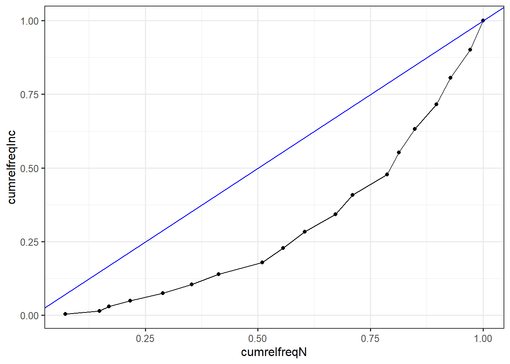

How far can we go with income brackets? (in progress)
To build their database on World political cleavages and inequality, Piketty and his team had to use electoral survey data. One problem with these sources is that they collect income data through brackets, without reporting the overall income average of the sample or the average per bracket. This Thus poses the question of how far one can go in terms of statistical analysis with only income brackets as a source of information for income. I will here explore what can be done with such a variable as well as the technical note that Piketty et al. (2021) provides to explain how they computed the vote share for income and education decile, which they claim is one of their main contributions on political cleavages and inequality.
A first look on the WPID dataset
The wpid is based on an impressive dataset compiling electoral survey data of 500 elections since 1948. Since the technical note takes Canada’s 2015 election as an example, I will use the latter here.
ca <- read_dta("ca.dta")
ca2015 <- ca %>%
filter(year == 2015)
rm(ca)
sort(unique(ca2015$inc)) [1] 1 2 3 4 5 6 7 8 10 11 12 13 14 15 16 17 18 19 20Note that there is already something going on here: in the dataset, the variable income has 19 brackets/categories here whereas it has 18 in the technical note. Furthermore, income brackets “jump” from 8 to 10. I will ignore these issues and still work with this dataset, we just won’t have the same results as in Piketty & al’s example.
A first step in analyzing such a variable is to compute the frequency, relative frequency and the cumulative frequencies. Note that I only take the individuals who vote the the New Democratic Party (NDP) as in the technical note’s example:
ca2015 %>% filter(votendp == 1) %>%
count(inc) %>%
drop_na() %>%
ungroup() %>%
mutate(
cum.n = cumsum(n),
prop = n/sum(n),
rangeleft = lag(cumsum(prop), default = 0),
cumrelfreqN = cumsum(prop),
cumrelfreqInc = cumsum(inc/sum(inc))) -> table.income
table.income %>%
gt(caption = "Distribution of income groups")| inc | n | cum.n | prop | rangeleft | cumrelfreqN | cumrelfreqInc |
|---|---|---|---|---|---|---|
| 1 | 53 | 53 | 0.07230559 | 0.00000000 | 0.07230559 | 0.004975124 |
| 2 | 56 | 109 | 0.07639836 | 0.07230559 | 0.14870396 | 0.014925373 |
| 3 | 15 | 124 | 0.02046385 | 0.14870396 | 0.16916780 | 0.029850746 |
| 4 | 35 | 159 | 0.04774898 | 0.16916780 | 0.21691678 | 0.049751244 |
| 5 | 53 | 212 | 0.07230559 | 0.21691678 | 0.28922237 | 0.074626866 |
| 6 | 47 | 259 | 0.06412005 | 0.28922237 | 0.35334243 | 0.104477612 |
| 7 | 44 | 303 | 0.06002729 | 0.35334243 | 0.41336971 | 0.139303483 |
| 8 | 71 | 374 | 0.09686221 | 0.41336971 | 0.51023192 | 0.179104478 |
| 10 | 34 | 408 | 0.04638472 | 0.51023192 | 0.55661664 | 0.228855721 |
| 11 | 35 | 443 | 0.04774898 | 0.55661664 | 0.60436562 | 0.283582090 |
| 12 | 50 | 493 | 0.06821282 | 0.60436562 | 0.67257844 | 0.343283582 |
| 13 | 28 | 521 | 0.03819918 | 0.67257844 | 0.71077763 | 0.407960199 |
| 14 | 56 | 577 | 0.07639836 | 0.71077763 | 0.78717599 | 0.477611940 |
| 15 | 19 | 596 | 0.02592087 | 0.78717599 | 0.81309686 | 0.552238806 |
| 16 | 26 | 622 | 0.03547067 | 0.81309686 | 0.84856753 | 0.631840796 |
| 17 | 35 | 657 | 0.04774898 | 0.84856753 | 0.89631651 | 0.716417910 |
| 18 | 23 | 680 | 0.03137790 | 0.89631651 | 0.92769441 | 0.805970149 |
| 19 | 32 | 712 | 0.04365621 | 0.92769441 | 0.97135061 | 0.900497512 |
| 20 | 21 | 733 | 0.02864939 | 0.97135061 | 1.00000000 | 1.000000000 |
We can then plot income groups against their proportion
table.income %>%
ggplot()+
aes(x = factor(inc), y = prop)+
geom_col()+
theme_bw()+
xlab("Income group") -> income.group.plot
income.group.plot
If we plot the income group against the relative cumulative frequency, we obtain the cumulative distribution of income groups. The cumulative distribution can also be directly plotted with plot(ecdf()):
table.income %>%
ggplot()+
aes(x = factor(inc), y = cumrelfreqN)+
geom_point()+
theme_bw()+
xlab("Income group")+
labs(title = "Cumulative distribution of Income group: 2015 Canadian election survey")
If we plot this relative cumulative distribution of observation against the one for income, we get the Lorenz curve:
table.income %>%
ggplot()+
aes(x = cumrelfreqN, y = cumrelfreqInc)+
geom_point()+
geom_line()+
geom_abline(intercept = 0, slope = 1, color = "blue")+
theme_bw()+
labs("Lorenz curve")
However, doing such graphs and computations directly from income brakcets has many flaws as we will see below.
What makes Piketty’s team approach special and interesting is their systematic analysis in terms of quantile groups. This is, according to them, their main contribution and this approach has the advantage to allow for systematic comparison accross space and time. We will try to reproduce here their conversion of income group into quantiles.
In R, the decile for each observation can be added to the dataset with the function ntile():
ca2015 <- ca2015 %>%
mutate(
decile = ntile(inc, 10)
)Now, the last column of ca2015 is the decile for each observation in the dataset.
ca2015 %>% filter(votendp == 1) %>%
group_by(inc) %>%
count(decile) %>%
drop_na() %>%
ungroup() %>%
mutate(prop = n/sum(n),
cumsumprop = cumsum(prop)) -> table.income.vote
table.income.vote %>% gt(caption = "Decile and income bracket")| inc | decile | n | prop | cumsumprop |
|---|---|---|---|---|
| 1 | 1 | 53 | 0.072305593 | 0.07230559 |
| 2 | 1 | 23 | 0.031377899 | 0.10368349 |
| 2 | 2 | 33 | 0.045020464 | 0.14870396 |
| 3 | 2 | 15 | 0.020463847 | 0.16916780 |
| 4 | 2 | 22 | 0.030013643 | 0.19918145 |
| 4 | 3 | 13 | 0.017735334 | 0.21691678 |
| 5 | 3 | 53 | 0.072305593 | 0.28922237 |
| 6 | 3 | 40 | 0.054570259 | 0.34379263 |
| 6 | 4 | 7 | 0.009549795 | 0.35334243 |
| 7 | 4 | 44 | 0.060027285 | 0.41336971 |
| 8 | 4 | 30 | 0.040927694 | 0.45429741 |
| 8 | 5 | 41 | 0.055934516 | 0.51023192 |
| 10 | 5 | 16 | 0.021828104 | 0.53206003 |
| 10 | 6 | 18 | 0.024556617 | 0.55661664 |
| 11 | 6 | 35 | 0.047748977 | 0.60436562 |
| 12 | 6 | 35 | 0.047748977 | 0.65211460 |
| 12 | 7 | 15 | 0.020463847 | 0.67257844 |
| 13 | 7 | 28 | 0.038199181 | 0.71077763 |
| 14 | 7 | 27 | 0.036834925 | 0.74761255 |
| 14 | 8 | 29 | 0.039563438 | 0.78717599 |
| 15 | 8 | 19 | 0.025920873 | 0.81309686 |
| 16 | 8 | 19 | 0.025920873 | 0.83901774 |
| 16 | 9 | 7 | 0.009549795 | 0.84856753 |
| 17 | 9 | 35 | 0.047748977 | 0.89631651 |
| 18 | 9 | 21 | 0.028649386 | 0.92496589 |
| 18 | 10 | 2 | 0.002728513 | 0.92769441 |
| 19 | 10 | 32 | 0.043656207 | 0.97135061 |
| 20 | 10 | 21 | 0.028649386 | 1.00000000 |
However, it is straightforward to see that the ntile() function is not perfect in computing decile. More generally, computing income decile when the income variable is in brackets seems complicated, but the technical note proposes a re-weighting average approach to partially solve this problem.
To see how the re-weighing approach works, let’s go back to the first table:
table.income %>%
mutate(id = 1:length(table.income$inc)) %>%
gt()| inc | n | cum.n | prop | rangeleft | cumrelfreqN | cumrelfreqInc | id |
|---|---|---|---|---|---|---|---|
| 1 | 53 | 53 | 0.07230559 | 0.00000000 | 0.07230559 | 0.004975124 | 1 |
| 2 | 56 | 109 | 0.07639836 | 0.07230559 | 0.14870396 | 0.014925373 | 2 |
| 3 | 15 | 124 | 0.02046385 | 0.14870396 | 0.16916780 | 0.029850746 | 3 |
| 4 | 35 | 159 | 0.04774898 | 0.16916780 | 0.21691678 | 0.049751244 | 4 |
| 5 | 53 | 212 | 0.07230559 | 0.21691678 | 0.28922237 | 0.074626866 | 5 |
| 6 | 47 | 259 | 0.06412005 | 0.28922237 | 0.35334243 | 0.104477612 | 6 |
| 7 | 44 | 303 | 0.06002729 | 0.35334243 | 0.41336971 | 0.139303483 | 7 |
| 8 | 71 | 374 | 0.09686221 | 0.41336971 | 0.51023192 | 0.179104478 | 8 |
| 10 | 34 | 408 | 0.04638472 | 0.51023192 | 0.55661664 | 0.228855721 | 9 |
| 11 | 35 | 443 | 0.04774898 | 0.55661664 | 0.60436562 | 0.283582090 | 10 |
| 12 | 50 | 493 | 0.06821282 | 0.60436562 | 0.67257844 | 0.343283582 | 11 |
| 13 | 28 | 521 | 0.03819918 | 0.67257844 | 0.71077763 | 0.407960199 | 12 |
| 14 | 56 | 577 | 0.07639836 | 0.71077763 | 0.78717599 | 0.477611940 | 13 |
| 15 | 19 | 596 | 0.02592087 | 0.78717599 | 0.81309686 | 0.552238806 | 14 |
| 16 | 26 | 622 | 0.03547067 | 0.81309686 | 0.84856753 | 0.631840796 | 15 |
| 17 | 35 | 657 | 0.04774898 | 0.84856753 | 0.89631651 | 0.716417910 | 16 |
| 18 | 23 | 680 | 0.03137790 | 0.89631651 | 0.92769441 | 0.805970149 | 17 |
| 19 | 32 | 712 | 0.04365621 | 0.92769441 | 0.97135061 | 0.900497512 | 18 |
| 20 | 21 | 733 | 0.02864939 | 0.97135061 | 1.00000000 | 1.000000000 | 19 |
We can directly see the problem posed by income brackets: for example, we can observe that all of income bracket one belongs to the first decile since its relative range is between 0 and 0.0723. However, the relative range of bracket two is [0.0723 - 0.1487]. Some part of it belong to the first decile ([0 - 0.1]), but some belong to the second ([0 - 0.2]). The approach to compute the proportion of observations belonging to the any given decile is to compute the share of each income bracket belonging to this decile and then compute a weighted average. For example, if I want to compute the share of observation of the first decile (D10), I already know that 100% of income bracket one belongs to D10 but I need to know the share of bracket 2 (B2) belonging to D10.
To estimate this, let’s assume the distribution of B2 is uniform \(x \sim U[0.0723; 0.1487]\), with x the observation within this range. We want to know \(P(x<0.1)\), that is to say, the probability that x belongs to the first decile. We use the uniform cumulative distribution function with parameters min = 0.073 and max = 0.1487: \(P(x<0.1) = \frac{0.1-0.0723}{0.1487-0.0723} = 0.3626\). This means that 36.26% of B2 belongs to D10. Then, the weighted average for the proportion of observation within D10: \(\frac{1*0.0723+0.3626*0.0764}{1+0.3626} = 0.0734\). 7.34% of total observations belong to the first decile.
Here is the computation in R
punif(0.1, table.income$cumrelfreqN[1], table.income$cumrelfreqN[2])[1] 0.3625Unfortunately, there is to my knowledge no function in R that will compute the shares automatically. I can nonetheless compute them through a tedious for loop:
weight <- rep(NA, length(table.income$inc))
for (i in 1:length(table.income$inc)) {
weight[i] <- ifelse(table.income$cumrelfreqN[i] < 0.1 | table.income$cumrelfreqN[i] == 1, 1,
ifelse(table.income$cumrelfreqN[i] > 0.1 & table.income$cumrelfreqN[i] < 0.2, punif(0.1, min = table.income$cumrelfreqN[i-1], max = table.income$cumrelfreqN[i]),
ifelse(table.income$cumrelfreqN[i] > 0.2 & table.income$cumrelfreqN[i] < 0.3, punif(0.2, min = table.income$cumrelfreqN[i-1], max = table.income$cumrelfreqN[i]),
ifelse(table.income$cumrelfreqN[i] > 0.3 & table.income$cumrelfreqN[i] < 0.4, punif(0.3, min = table.income$cumrelfreqN[i-1], max = table.income$cumrelfreqN[i]),
ifelse(table.income$cumrelfreqN[i] > 0.4 & table.income$cumrelfreqN[i] < 0.5, punif(0.4, min = table.income$cumrelfreqN[i-1], max = table.income$cumrelfreqN[i]),
ifelse(table.income$cumrelfreqN[i] > 0.5 & table.income$cumrelfreqN[i] < 0.6, punif(0.5, min = table.income$cumrelfreqN[i-1], max = table.income$cumrelfreqN[i]),
ifelse(table.income$cumrelfreqN[i] > 0.6 & table.income$cumrelfreqN[i] < 0.7, punif(0.6, min = table.income$cumrelfreqN[i-1], max = table.income$cumrelfreqN[i]),
ifelse(table.income$cumrelfreqN[i] > 0.7 & table.income$cumrelfreqN[i] < 0.8, punif(0.7, min = table.income$cumrelfreqN[i-1], max = table.income$cumrelfreqN[i]),
ifelse(table.income$cumrelfreqN[i] > 0.8 & table.income$cumrelfreqN[i] < 0.9, punif(0.8, min = table.income$cumrelfreqN[i-1], max = table.income$cumrelfreqN[i]), 1)))))))))
}
weight [1] 1.0000000 0.3625000 0.0000000 0.6457143 0.0000000 0.1680851 0.7772727
[8] 0.8943662 0.0000000 0.9085714 0.0000000 0.7178571 0.0000000 0.4947368
[15] 0.0000000 0.0000000 1.0000000 1.0000000 1.0000000I replace the 0 with 1:
weight <- ifelse(weight == 0, 1, weight)
table.income <- table.income %>% select(-cumrelfreqInc) %>%
mutate(share_decile = weight)
table.income %>%
mutate(share_rest = 1 - weight) -> table.income
table.income %>% gt()| inc | n | cum.n | prop | rangeleft | cumrelfreqN | share_decile | share_rest |
|---|---|---|---|---|---|---|---|
| 1 | 53 | 53 | 0.07230559 | 0.00000000 | 0.07230559 | 1.0000000 | 0.00000000 |
| 2 | 56 | 109 | 0.07639836 | 0.07230559 | 0.14870396 | 0.3625000 | 0.63750000 |
| 3 | 15 | 124 | 0.02046385 | 0.14870396 | 0.16916780 | 1.0000000 | 0.00000000 |
| 4 | 35 | 159 | 0.04774898 | 0.16916780 | 0.21691678 | 0.6457143 | 0.35428571 |
| 5 | 53 | 212 | 0.07230559 | 0.21691678 | 0.28922237 | 1.0000000 | 0.00000000 |
| 6 | 47 | 259 | 0.06412005 | 0.28922237 | 0.35334243 | 0.1680851 | 0.83191489 |
| 7 | 44 | 303 | 0.06002729 | 0.35334243 | 0.41336971 | 0.7772727 | 0.22272727 |
| 8 | 71 | 374 | 0.09686221 | 0.41336971 | 0.51023192 | 0.8943662 | 0.10563380 |
| 10 | 34 | 408 | 0.04638472 | 0.51023192 | 0.55661664 | 1.0000000 | 0.00000000 |
| 11 | 35 | 443 | 0.04774898 | 0.55661664 | 0.60436562 | 0.9085714 | 0.09142857 |
| 12 | 50 | 493 | 0.06821282 | 0.60436562 | 0.67257844 | 1.0000000 | 0.00000000 |
| 13 | 28 | 521 | 0.03819918 | 0.67257844 | 0.71077763 | 0.7178571 | 0.28214286 |
| 14 | 56 | 577 | 0.07639836 | 0.71077763 | 0.78717599 | 1.0000000 | 0.00000000 |
| 15 | 19 | 596 | 0.02592087 | 0.78717599 | 0.81309686 | 0.4947368 | 0.50526316 |
| 16 | 26 | 622 | 0.03547067 | 0.81309686 | 0.84856753 | 1.0000000 | 0.00000000 |
| 17 | 35 | 657 | 0.04774898 | 0.84856753 | 0.89631651 | 1.0000000 | 0.00000000 |
| 18 | 23 | 680 | 0.03137790 | 0.89631651 | 0.92769441 | 1.0000000 | 0.00000000 |
| 19 | 32 | 712 | 0.04365621 | 0.92769441 | 0.97135061 | 1.0000000 | 0.00000000 |
| 20 | 21 | 733 | 0.02864939 | 0.97135061 | 1.00000000 | 1.0000000 | 0.00000000 |
There can be mistakes, but the results seem to make sense
Since I do not want to ever do this computation again (😅), I put all of this into a function:
weight_share <- function(x){
weight <- rep(NA, length(x))
for (i in 1:length(x)) {
weight[i] <- ifelse(x[i] < 0.1 | x[i] == 1, 1,
ifelse(x[i] > 0.1 & x[i] < 0.2, punif(0.1, min = x[i-1], max = x[i]),
ifelse(x[i] > 0.2 & x[i] < 0.3, punif(0.2, min = x[i-1], max = x[i]),
ifelse(x[i] > 0.3 & x[i] < 0.4, punif(0.3, min = x[i-1], max = x[i]),
ifelse(x[i] > 0.4 & x[i] < 0.5, punif(0.4, min = x[i-1], max = x[i]),
ifelse(x[i] > 0.5 & x[i] < 0.6, punif(0.5, min = x[i-1], max = x[i]),
ifelse(x[i] > 0.6 & x[i] < 0.7, punif(0.6, min = x[i-1], max = x[i]),
ifelse(x[i] > 0.7 & x[i] < 0.8, punif(0.7, min = x[i-1], max = x[i]),
ifelse(x[i] > 0.8 & x[i] < 0.9, punif(0.8, min = x[i-1], max = x[i]), 1)))))))))
}
weight <- ifelse(weight == 0, 1, weight)
print(weight)
}Let’s check if the function works
weight_share(x = table.income$cumrelfreqN) [1] 1.0000000 0.3625000 1.0000000 0.6457143 1.0000000 0.1680851 0.7772727
[8] 0.8943662 1.0000000 0.9085714 1.0000000 0.7178571 1.0000000 0.4947368
[15] 1.0000000 1.0000000 1.0000000 1.0000000 1.0000000We are almost done, there are only the weighted averages for each decile left (in progress).
table.income %>%
gt()| inc | n | cum.n | prop | rangeleft | cumrelfreqN | share_decile | share_rest |
|---|---|---|---|---|---|---|---|
| 1 | 53 | 53 | 0.07230559 | 0.00000000 | 0.07230559 | 1.0000000 | 0.00000000 |
| 2 | 56 | 109 | 0.07639836 | 0.07230559 | 0.14870396 | 0.3625000 | 0.63750000 |
| 3 | 15 | 124 | 0.02046385 | 0.14870396 | 0.16916780 | 1.0000000 | 0.00000000 |
| 4 | 35 | 159 | 0.04774898 | 0.16916780 | 0.21691678 | 0.6457143 | 0.35428571 |
| 5 | 53 | 212 | 0.07230559 | 0.21691678 | 0.28922237 | 1.0000000 | 0.00000000 |
| 6 | 47 | 259 | 0.06412005 | 0.28922237 | 0.35334243 | 0.1680851 | 0.83191489 |
| 7 | 44 | 303 | 0.06002729 | 0.35334243 | 0.41336971 | 0.7772727 | 0.22272727 |
| 8 | 71 | 374 | 0.09686221 | 0.41336971 | 0.51023192 | 0.8943662 | 0.10563380 |
| 10 | 34 | 408 | 0.04638472 | 0.51023192 | 0.55661664 | 1.0000000 | 0.00000000 |
| 11 | 35 | 443 | 0.04774898 | 0.55661664 | 0.60436562 | 0.9085714 | 0.09142857 |
| 12 | 50 | 493 | 0.06821282 | 0.60436562 | 0.67257844 | 1.0000000 | 0.00000000 |
| 13 | 28 | 521 | 0.03819918 | 0.67257844 | 0.71077763 | 0.7178571 | 0.28214286 |
| 14 | 56 | 577 | 0.07639836 | 0.71077763 | 0.78717599 | 1.0000000 | 0.00000000 |
| 15 | 19 | 596 | 0.02592087 | 0.78717599 | 0.81309686 | 0.4947368 | 0.50526316 |
| 16 | 26 | 622 | 0.03547067 | 0.81309686 | 0.84856753 | 1.0000000 | 0.00000000 |
| 17 | 35 | 657 | 0.04774898 | 0.84856753 | 0.89631651 | 1.0000000 | 0.00000000 |
| 18 | 23 | 680 | 0.03137790 | 0.89631651 | 0.92769441 | 1.0000000 | 0.00000000 |
| 19 | 32 | 712 | 0.04365621 | 0.92769441 | 0.97135061 | 1.0000000 | 0.00000000 |
| 20 | 21 | 733 | 0.02864939 | 0.97135061 | 1.00000000 | 1.0000000 | 0.00000000 |
Finally, one can also try to fit a “Pareto line” to the income bracket data. Vilfredo Pareto (1848-1923) is well-known for being one of the first economist to have computed inequality indices (his famous alpha coefficient) directly from personal income distribution data. His relationship \(log(N) = A-\alpha log(x)\), with N the number of people earning more than income level x, is a famous relationship and almost every course on income inequality measurement starts with it.
First, a table need to be constructed from the data, we count the number of observation per income bracket and compute the inverse of the cumulative relative frequencies, which is the same as N is Pareto’s equation.
ca2015 %>%
count(inc) %>%
mutate(prop = n/sum(n),
cumrelfreq = cumsum(prop),
inverse_rcdf = rev(cumrelfreq)) -> paretotable
paretotable %>%
gt()| inc | n | prop | cumrelfreq | inverse_rcdf |
|---|---|---|---|---|
| 1 | 211 | 0.04687847 | 0.04687847 | 1.00000000 |
| 2 | 327 | 0.07265052 | 0.11952899 | 0.87136192 |
| 3 | 79 | 0.01755166 | 0.13708065 | 0.82914908 |
| 4 | 210 | 0.04665630 | 0.18373695 | 0.78626972 |
| 5 | 199 | 0.04421240 | 0.22794934 | 0.75960898 |
| 6 | 184 | 0.04087980 | 0.26882915 | 0.70451011 |
| 7 | 188 | 0.04176850 | 0.31059764 | 0.66985114 |
| 8 | 421 | 0.09353477 | 0.40413242 | 0.64185737 |
| 10 | 205 | 0.04554543 | 0.44967785 | 0.57209509 |
| 11 | 166 | 0.03688069 | 0.48655854 | 0.53921351 |
| 12 | 237 | 0.05265497 | 0.53921351 | 0.48655854 |
| 13 | 148 | 0.03288158 | 0.57209509 | 0.44967785 |
| 14 | 314 | 0.06976228 | 0.64185737 | 0.40413242 |
| 15 | 126 | 0.02799378 | 0.66985114 | 0.31059764 |
| 16 | 156 | 0.03465896 | 0.70451011 | 0.26882915 |
| 17 | 248 | 0.05509887 | 0.75960898 | 0.22794934 |
| 18 | 120 | 0.02666074 | 0.78626972 | 0.18373695 |
| 19 | 193 | 0.04287936 | 0.82914908 | 0.13708065 |
| 20 | 190 | 0.04221284 | 0.87136192 | 0.11952899 |
| NA | 579 | 0.12863808 | 1.00000000 | 0.04687847 |
Finally, one can plot the log of the inverse of the relative cumulative distribution function against the log of the income groups:
paretotable %>%
ggplot()+
aes(x = log(inc), y = log(rev(cumrelfreq)))+
geom_point()+
geom_smooth(method = "lm")+
theme_bw()
We can see that the line does not fit the data very well. As explained by Milanovic, the Pareto line fits well only for the top of income distribution. In fact, the data on personal income distribution that Pareto had only collected income data of the very rich. If he had data covering more than the top 1 percent, he would have probably made similar graphs as here and as in Milanovic’s blog post.